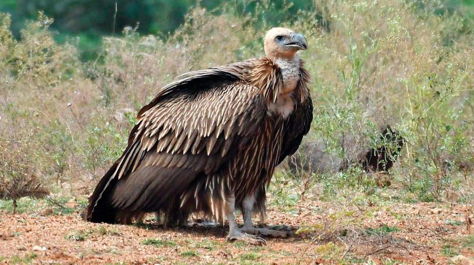

Himalayan Vulture
< Gibbon
Sunset Moth >
The Himalayan Vulture (Gyps Himalayensis) is a majestic bird found in the mountainous regions of South Asia, particularly the Himalayas. Distinguished by its predominantly white plumage and impressive wingspan of 270 to 310 cm, this vulture soars gracefully over high-altitude landscapes. With a pale yellow, featherless face and a hooked beak, it plays a vital role in the ecosystem as a scavenger, efficiently cleaning up carrion. Unfortunately listed as "Near Threatened," the Himalayan Vulture faces challenges such as habitat loss and poisoning from veterinary drugs. Despite its decline, efforts are underway to conserve this species, emphasizing its ecological importance in maintaining a healthy balance in the mountainous ecosystems it calls home.